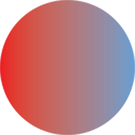

Select a chapter from the left, or click “Add New Chapter” to begin writing…
Choose how you’d like to work:
You are about to open a Teams meeting in a new tab. While the session is active, the Diagram view will be locked to protect client privacy. Meeting: